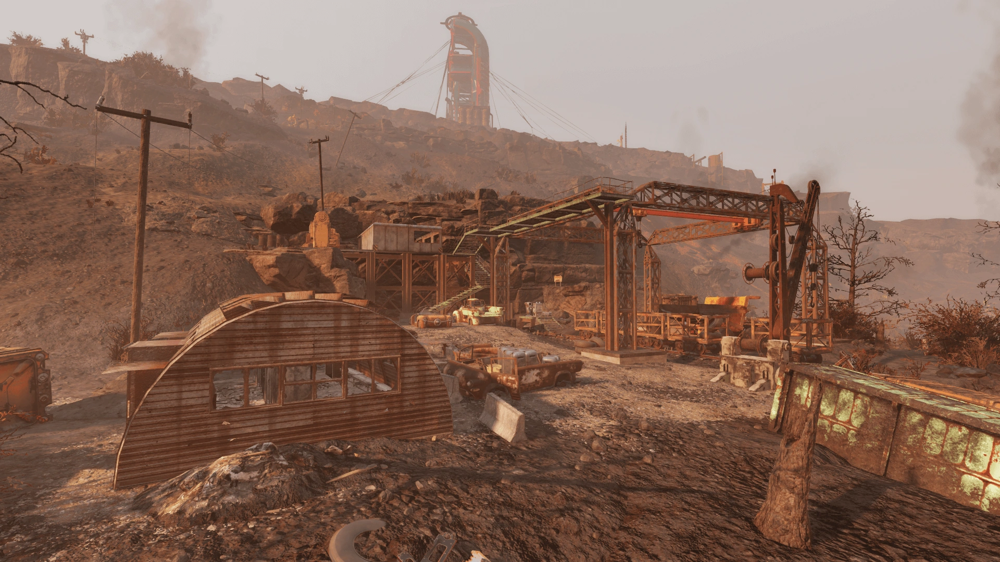
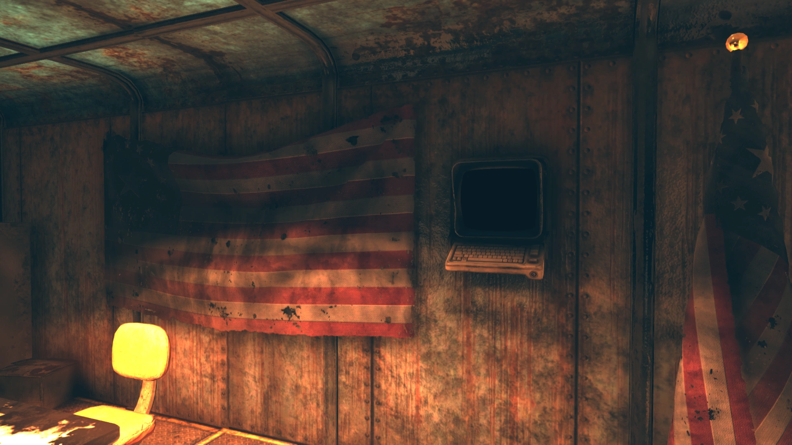
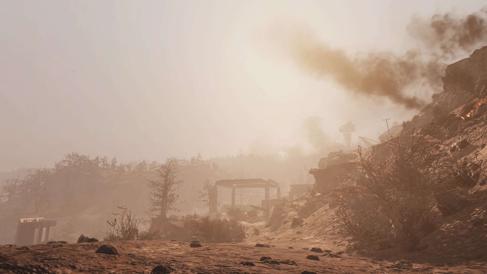

Abandoned Mine Site Kittery
放棄された鉱山サイト・キタリー
概要
放棄された鉱山サイト・キタリーは、アパラチアの積灰の山地域にあるロケーションである。
背景
この鉱山はホーンライト・インダストリアルが大戦前に所有しており、オートマイナー（自動採掘ロボット）を使用して資源を採集していた。
爆弾が落ちる直前、二人の人物がこの鉱山の中にいた — ルアンとジョージである。
彼らは鉱山内の自動システムが核攻撃の警告を発するのを聞いた。
ルアンは鉱山に留まることを望んだが、ジョージは脱出を望んだ。
彼らがその後生き延びたかどうかは不明だが、鉱山が彼らを内部に閉じ込めた可能性が高い。
プレイヤーが到着した時もそのような状態で発見される。
彼らのものと思われる最後の瞬間は、鉱山内の鉱山システムターミナル上に残されたホロテープに記録されている。
レイアウト
ロケーションのすぐ北側に、内部に少量の戦利品がある小さな構造物がある。
鉱山の入り口には多数の駐車車両と、鉱山カートから鉱石を降ろすために使用されるガントリー（門型クレーン）がある。
坑道自体は入り口で崩落しており、Lode Baringイベント中にのみ内部に入ることができる。
入り口の左側には高架ポッドがあり、追加の戦利品とロックされた爆発物クレートがいくつかある。
入り口の東側には別の小屋があり、少量の戦利品がある。
入り口の左右には2つのクレームトークン交換ターミナルが設置されており、イベント中に入手したクレームトークンを景品と交換できる。
注目のアイテム
- Mine recorder tape - 10.23.77（ホロテープ） — 鉱山システムターミナル上。
ホロテープ
（鉱山記録テープ - 2077年10月23日）
登場作品
放棄された鉱山サイト・キタリーはFallout 76にのみ登場する。
ギャラリー



鉱山坑道シリーズの中で最も心に残るロケーションの一つ。
核攻撃の瞬間をリアルに体験できるホロテープ「Mine recorder tape - 10.23.77」は、アパラチアに散らばる悲劇のかけらの中でも特に印象的です。
ルアンとジョージ、二人の選択 — 鉱山に残るか、外に出るか。
Vaultではない鉱山で核の嵐をしのごうとする絶望感と、それでも外の状況を知らずに飛び出すジョージの恐怖。
たった数分の会話に、大戦の日の恐怖が凝縮されています。
Lode Bearingイベント限定で内部に入れる仕組みも、この場所の秘められた物語を引き立てています。
This article was created by translating and editing Abandoned mine site Kittery from Nukapedia: The Fallout Wiki.
Licensed under the Creative Commons Attribution-Share Alike License (CC BY-SA 3.0).
© Overseer Mohi's Terminal — Fallout Lore Archive
コミュニティ維持のため、寄付を受け付けております。
COMMENTS